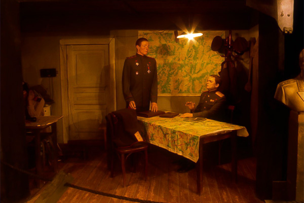
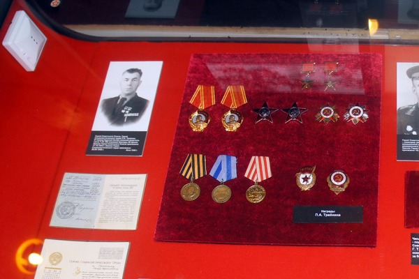
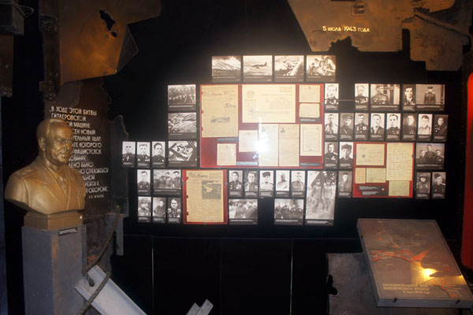
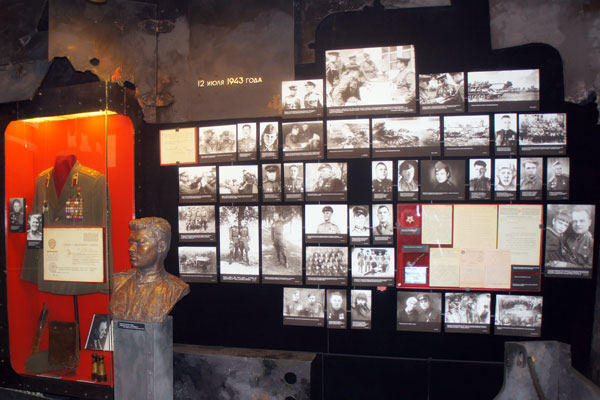
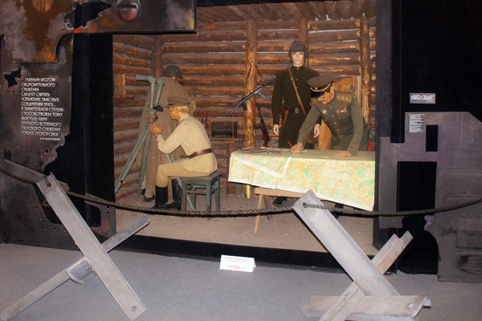
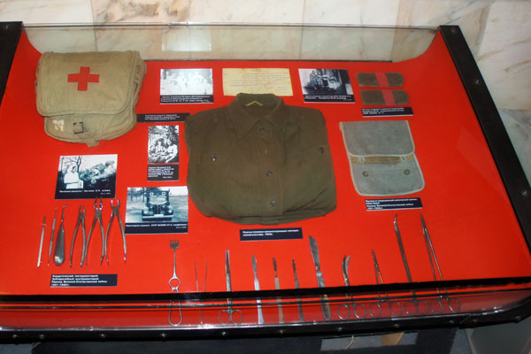
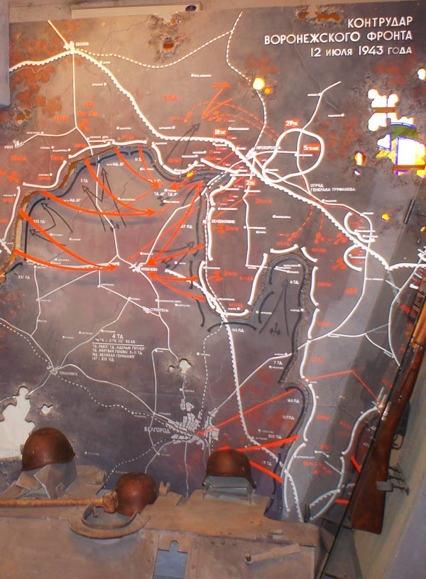

Главным экспонатом и достоянием музея является диорама, повествующая о боевых действиях на Прохоровском поле. Однако непосвященному посетителю без общей информации о Курском выступе, стратегической обстановке на фронте и боевых действиях, предшествующих боям на прохоровском направлении, трудно представить масштабы сражения, и место отображаемых на картине событий в истории Великой Отечественной войны. В связи с этим с момента открытия диорамы научными сотрудниками велась кропотливая работа по сбору экспонатов, выявлению документов в архивах, уточнению научных взглядов на историю битвы.
Результатом данной работы стало открытие постоянно действующей экспозиции «На земле опаленной» 4 августа 1993 г. Над созданием экспозиции в творческом содружестве с авторским коллективом Санкт-Петербургского комбината живописно-оформительских работ под руководством В.М. Пискунова работали научные сотрудники музея, а консультантами в работе стали сотрудники Института Военной истории МО СССР.
Экспозиция «На земле опаленной» представлена в двух залах второго этажа, где размещены материалы как о прославленных полководцах - Н.Ф. Ватутине, И.С. Коневе, М.Е. Катукове, так и о рядовых солдатах. Здесь же находится и коллекция наград П.А. Трайнина, удостоенного высоких званий Героя Советского Союза – за боевые подвиги, Героя Социалистического труда – за трудовое отличие в послевоенное время.
Многофигурная композиция «Встреча командующего войсками Воронежского фронта генерала армии Н.Ф. Ватутина с командующим 1-й танковой армией генерал-лейтенантом М.Е. Катуковым накануне Курской битвы».

...Командовал Воронежским фронтом «генерал от наступления» - так называли его подчиненные, у врага он получил прозвище «Гроссмейстер». Генерал армии Ватутин Николай Федорович - наш земляк, уроженец села Чепухино (Ватутино) близ города Валуйки. Выходец из простой крестьянской семьи, получил образование, прошел путь от солдата до генерала, погиб в 1944 году, похоронен в Киеве.
Сегодня имя генерала армии Ватутина вписано золотыми буквами в историю Белгородской земли, а его биография – одна из многочисленных славных страниц ратной истории нашего края и всей России.
Экспозиционный комплекс с коллекцией наград Петра Афанасьевича Трайнина, удостоенного высоких званий Героя Советского Союза и Героя Социалистического труда - за трудовое отличие в послевоенное время.

Петр Афанасьевич - один из 11-и человек, отмеченных двумя высшими степенями отличия СССР и второй после И. В. Сталина. В годы Великой Отечественной войны — механик-водитель танка Т-34 150-й танковой бригады 60-й армии Воронежского фронта.
В экспозиции музея размещены материалы, как о прославленных полководцах, так и о рядовых солдатах. Удачное цветовое решение экспозиции - 3 основных цвета войны зримым фоном проходят перед посетителями: серый - цвет солдатских шинелей, пыльных фронтовых дорог, черный - цвет гари, красный - кровь, пролитая в боях. Карты-схемы этого зала позволяют по дням проследить динамику тяжелых оборонительных боев.

Утром 11 июля началось наступление танковых войск СС... За несколько минут боя они сумели уничтожить практически всю артиллерийскую батарею - в живых остался только один человек - наводчик старший сержант Михаил Борисов. Он встал к единственному уцелевшему 76-мм орудию, сам подносил снаряды, заряжал, наводил и стрелял. За 17 минут боя из 19 наступающих танков врага он подбил семь и тем самым сорвал атаку противника. Его фотография, сборник стихов и бюст представлены в экспозиции.

Многофигурная композиция «Наблюдательный пункт 5-й гвардейской танковой армии». Решающая роль в контрударе отводилась 5 гвардейской танковой армии (командующий генерал-лейтенант П.А. Ротмистров). Армия должна была нанести удар в направлении на Яковлево.

В 8 часов 12 июля после авиационной и артиллерийской подготовки соединения 1-го эшелона 5 гвардейской танковой армии перешли в наступление.
Часть экспозиции посвящена медикам: фотографии, документы, снаряжение тех, кто спасал жизнь на Прохоровском поле. В Курской битве был приобретен богатый опыт организации медицинского обеспечения войск.

В экспозиции музея представлены фотографии и документы полевого госпиталя №5160, медицинские инструменты и снаряжение периода Великой Отечественной войны.
...За 12 июля около Прохоровки на полосе шириной примерно 30 километров произошел целый ряд танковых боев различного масштаба. Главная битва между рекой и железной дорогой продолжалась почти до темноты. Ни одной из сторон не удалось достичь целей, поставленных на 12 июля; немцам не удалось захватить Прохоровку, прорвать оборону советских войск и выйти на оперативный простор, а советским войскам не удалось окружить группировку противника. И гитлеровские, и советские войска понесли серьезные потери в живой силе и технике. При этом потери наших войск, увы, были значительно выше.

В этот день состоялось Прохоровское танковое сражение, после которого (13-18 июля) наступил перелом в битве на южном фасе Курской битвы. Советские войска перешли в наступление (23.07 - 23.08.1943) и разгромили врага. События Прохоровского сражения стали основой художественного замысла диорамы «Огненная дуга».